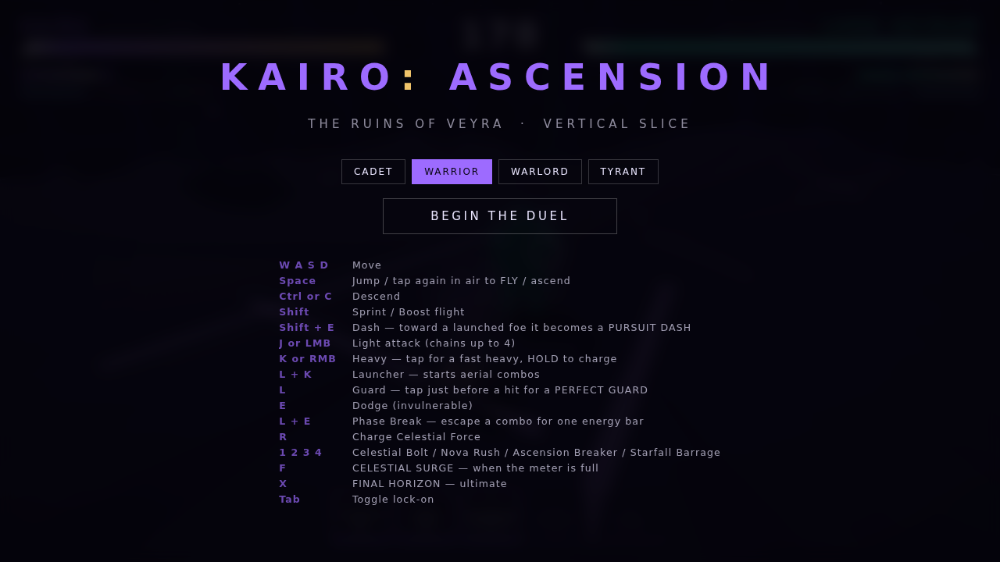
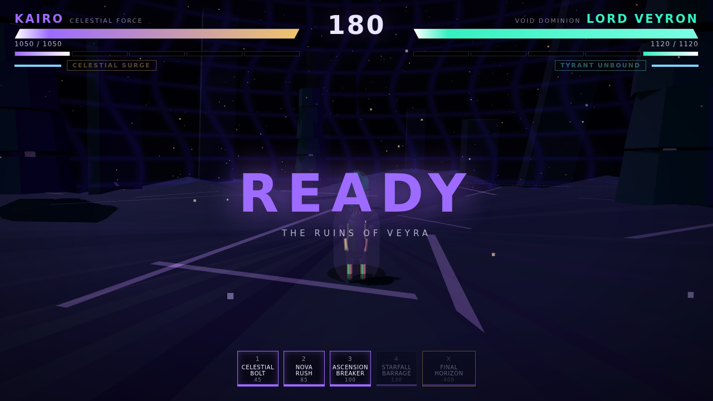
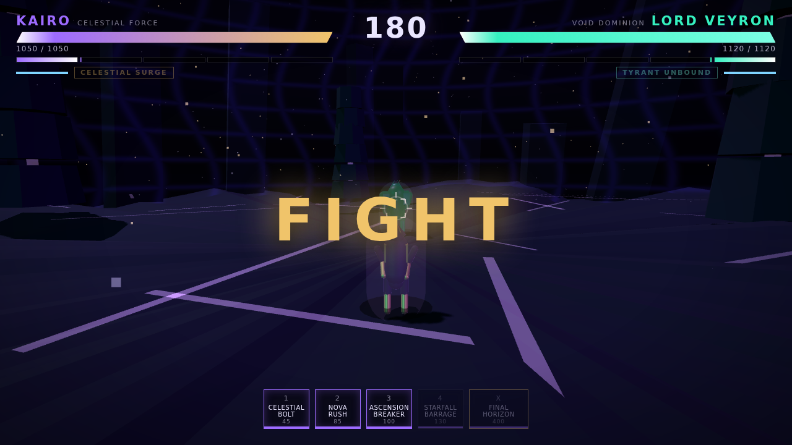
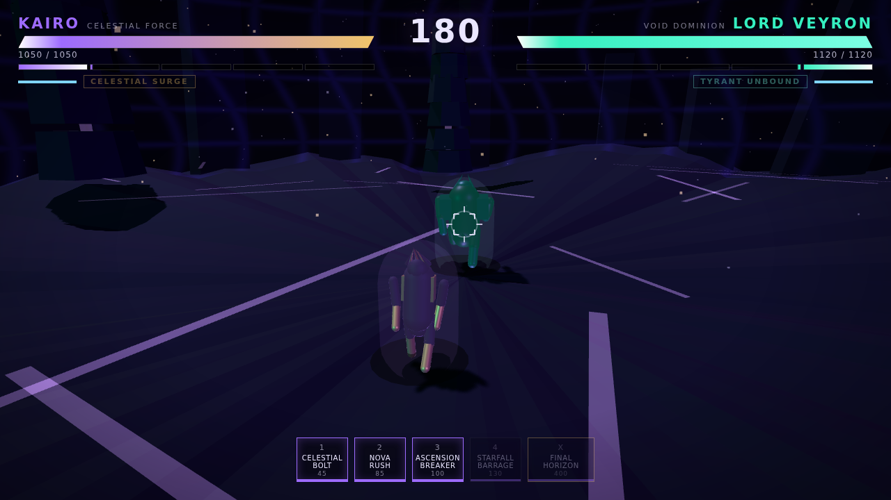
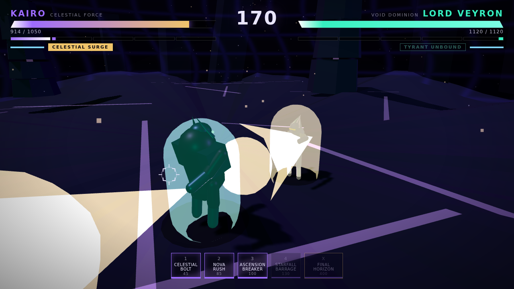
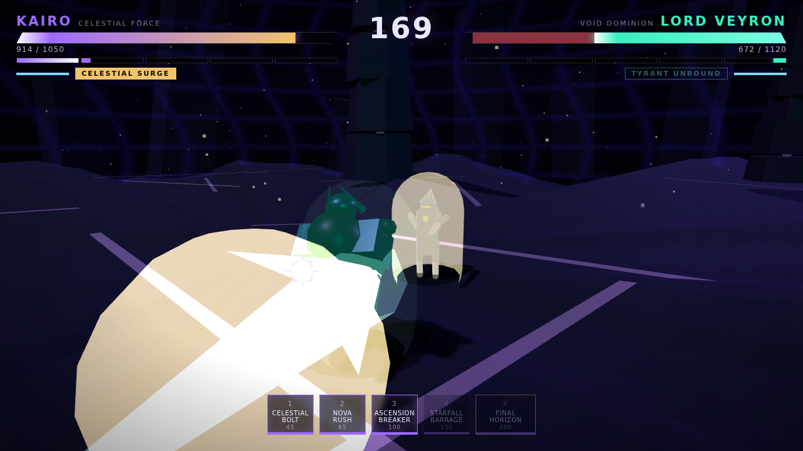
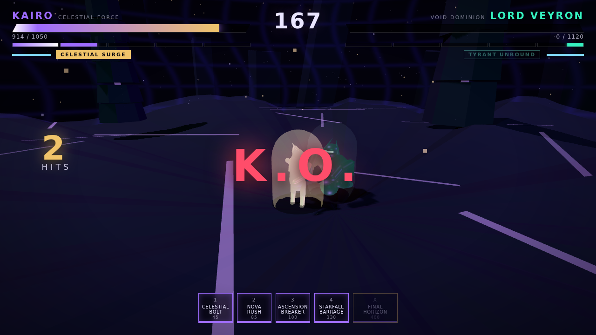
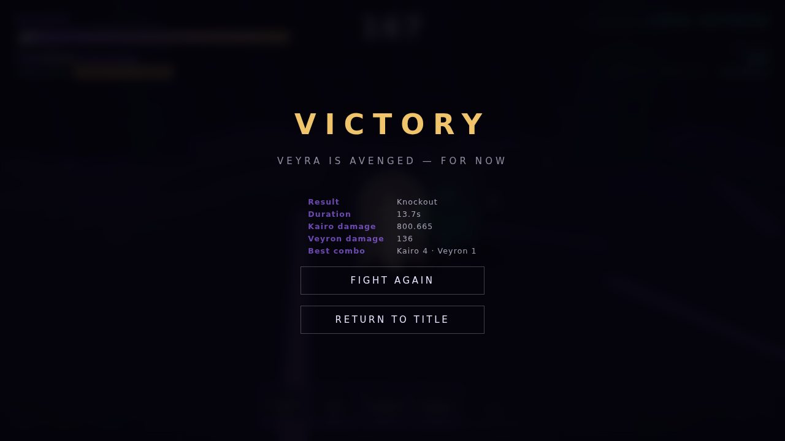
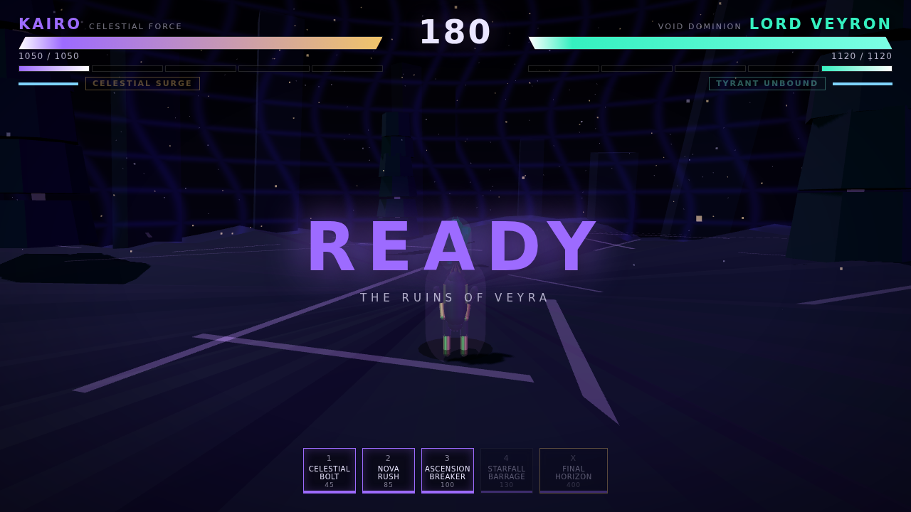
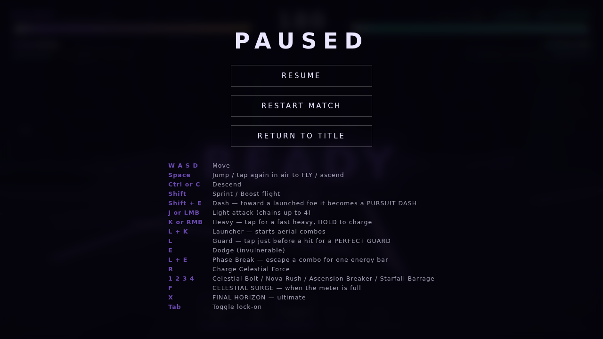

Gameplay evidence — captured from the running build
Rendered by:ANGLE (Google, Vulkan 1.3.0 (SwiftShader Device (Subzero) (0x0000C0DE)), SwiftShader driver).
This container has no GPU, so Chromium falls back to SwiftShader software rasterisation. The frame rates below are a floor, not representative hardware performance — the CPU-side simulation cost is the meaningful number here.
Captured 2026-08-06T05:36:09.663Z.

01-title — Title screen with difficulty selection and control reference.

02-intro — Match intro: READY banner over the Ruins of Veyra.

03-neutral — Neutral: both fighters framed, full HUD, lock-on reticle on Veyron.

04-approach — Kairo advancing on Veyron; the camera widens with speed.
14-ultimate-windup — Final Horizon wind-up — cinematic camera taking over, beam pillar.

15-ultimate-capture — Final Horizon — Veyron captured, energy motes streaming inward.

16-ultimate-payoff — Final Horizon payoff — full-screen detonation, HUD still legible.

17-ko — K.O. — match resolution banner.

18-results — Victory screen with match statistics.

19-restart — Match restarted cleanly from the victory screen.

20-pause — Pause menu with resume, restart and control reference.
Browser scenario results
Scenario
Result
Detail
Match reaches Fighting phase
PASS
phase=Fighting after intro
Flight reachable from a mid-air jump tap
PASS
y=9.78 flying=true state=Fly
Light chain connects in-browser
PASS
3 hits landed, peak combo counter 3
Starfall Barrage fires a multi-shot volley
PASS
projectiles spawned = 5
Celestial Surge activates
PASS
transformed=true
Ultimate releases control cleanly
PASS
cinematicOwner=-1
Ultimate deals decisive damage on a captured target
PASS
Veyron hp=671 / 1180
Match reaches a resolved Victory state
PASS
phase=Victory winner=0
Player can win the match
PASS
winner=0 (0 = Kairo)
Restart from the results screen fully resets the match
PASS
hp=1050/1050 phase=Intro
Pause menu opens during a live match
PASS
overlay shown=true
No uncaught page errors during the session
PASS
none
Performance
Scenario
fps
sim ms
render ms
worst frame
flight
5.3
0.00
3.63
250
melee
4.6
0.00
2.43
233
projectiles
5.6
0.00
2.07
217
ultimate
5.0
0.00
2.57
250
Read this correctly. The fps column is software rasterisation on a
4-core container with no GPU and is not a hardware figure. The
sim ms column is the meaningful one: simulation cost is effectively
zero, so any frame-rate problem on real hardware would be GPU-side, not
algorithmic. Headless simulation throughput is ~55,000–75,000 frames/sec.
Verifying the 60 fps target requires one manual run on a GPU machine
(ACCEPTANCE_TESTS.md P6).
Add KAIRO: ASCENSION simulation core, fighters, AI and acceptance tests
1f87b97
2026-06-22
Initial commit
Next major objective
Raise the practical combo ceiling. Every system needed for
long aerial routes already exists — launcher, air chain, pursuit dash, ground
bounce, juggle decay — but real play tops out at 4 hits because nothing rewards
discovering them. The next milestone adds route-enabling cancels and teaches
them through the AI, which is the difference between a competent fighter and a
memorable one. Full list in docs/NEXT_ACTIONS.md.
Generated 2026-08-06T05:44:41.618Z by npm run dashboard.
This page is built from captured evidence, live test runs and the git log — not maintained by hand.